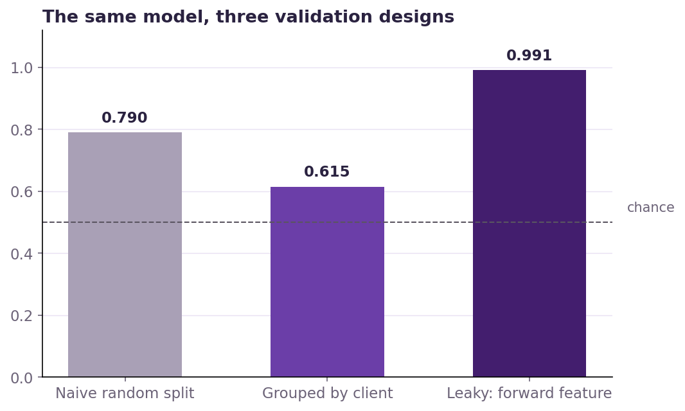
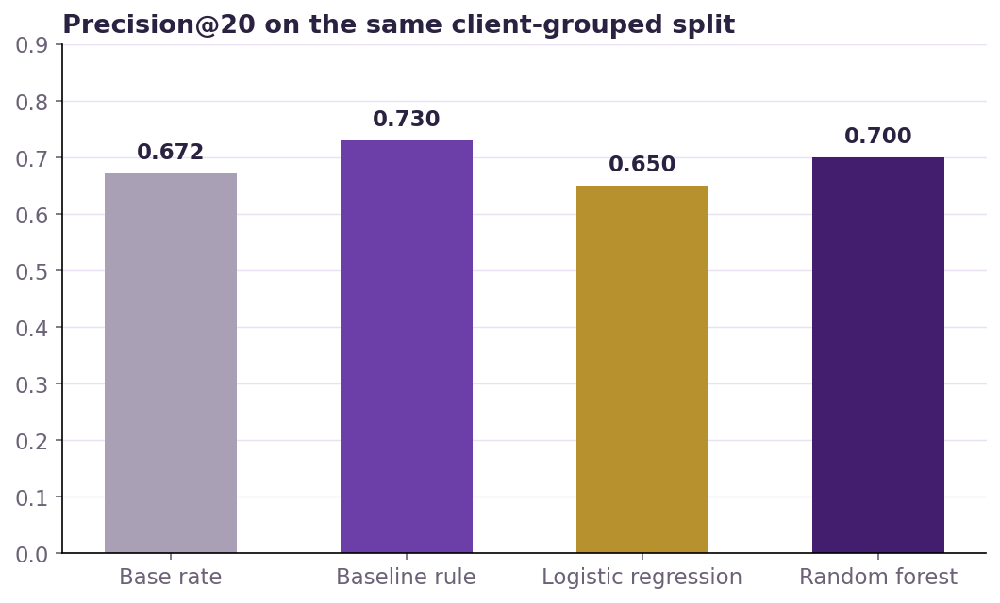
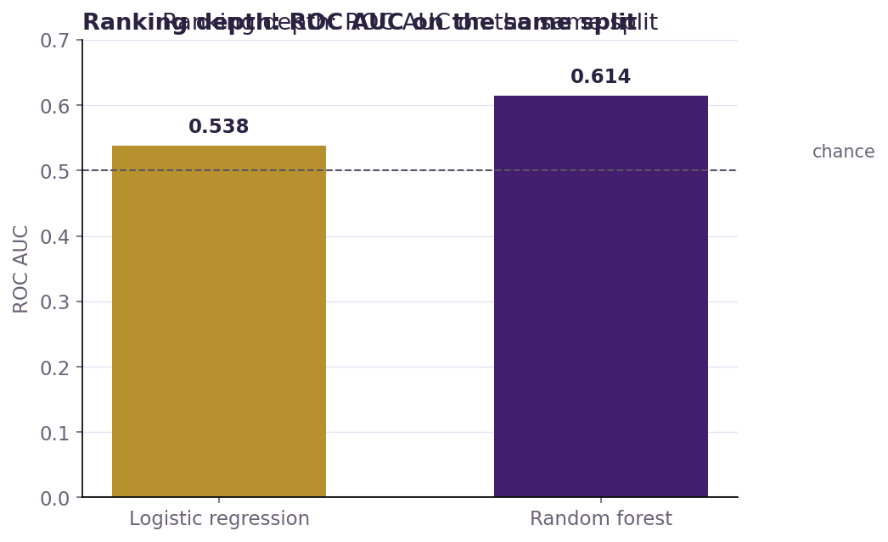
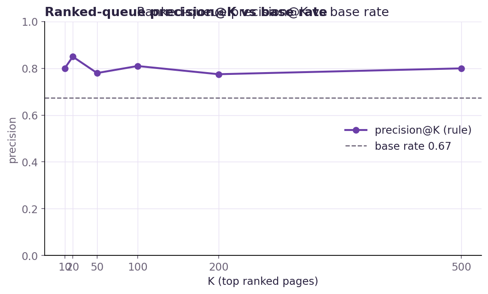
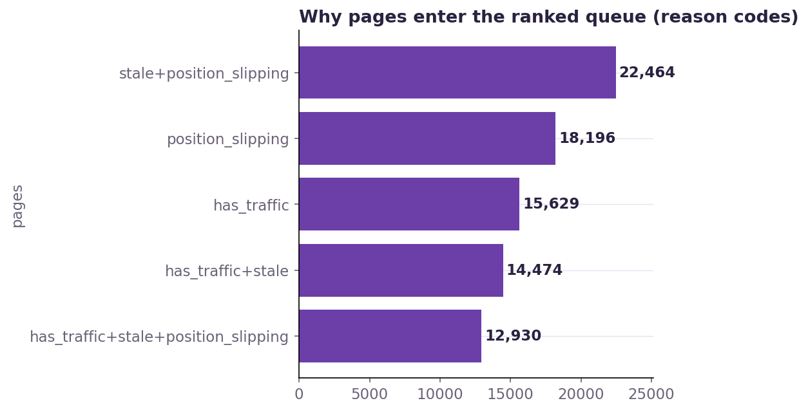

- Abstract
- Introduction & the decision this supports
- Data — what I used and why I excluded the rest
- Methodology — assumptions, features, label, baseline, validation, leakage checks
- Results — model vs baseline on the same split
- Limitations & honest framing
- Ranked recommendations — the action playbook
- Reproducibility
- Acknowledgments & data credit
1Abstract
Which pages should a content editor review first when the goal is to keep high-traffic content from losing search impressions? On the FlyRank ML Internship dataset — 78.8 million rows of daily content-performance data across a pseudonymized portfolio, reduced to a single 30-day decision snapshot of 108,254 eligible pages — I labeled pages that lost more than 20% of their baseline impressions over the following 30 days (base rate 67%). I built a transparent rule-based baseline (has traffic, is old, position slipping), a logistic regression, and a random forest, and evaluated all three on a client-held-out five-fold split using only features knowable at the decision date, with deliberate leakage probes. The readable rule wins at top-K precision (0.73 vs 0.70 for the forest vs the 0.67 base rate at precision@20); the forest adds only modest ranking depth (ROC AUC 0.61 vs 0.54), while a naive split or a single future-window feature would have falsely claimed ~0.79–0.99 AUC. The output is a ranked, reason-coded refresh queue an editor can act on today — and the finding that validation design, not model choice, is what decides whether a number is a result or a confession.
2Introduction / Problem statement
One real scenario, then the principle.
An SEO editor at a content operation has a fixed weekly budget — say 20 pages — to review for refresh. Their portfolio is a few thousand live pages, and every week a visible page is steadily losing impressions. The wrong call is asymmetric: choosing a page that would not have moved costs an editor's hours (recoverable), but skipping a page that keeps losing traffic answers to nothing until the loss is already visible in the next month's report.
The decision this work supports: which page should a content editor look at first. The unit of analysis is one page at one decision date. The output is a ranked queue — pages ordered by how strongly the evidence says they need attention, each carrying a machine-readable reason code a human can inspect before touching anything. This queue only decides order; the human still makes the edit decision.
Why does data/ML help here at all? Because the queue is built from the search signals we actually observe for a page — its traffic level, its average search position, its age and freshness, its content descriptors — and we can measure, on a held-out set, how often "ranked first" really means "declined next window". That measurement is the whole paper.
The honest version, up front. The obvious move is to train a model on everything known about a page. Judged the way the editor actually uses the output — by how the top of the ranked list performs, on clients the model never trained on — the transparent three-condition rule beats it. And two easy mistakes can fool anyone here: a naive random split inflates a modest model to ~0.79 AUC, and one future-window feature inflates it to ~0.99. The gap between those flattering numbers and what survives is the whole point of this paper.
3Data
Which release, which tables, date windows, and what I excluded and why. Everything here is public-safe: no client names, URLs, titles, domains, or raw queries appear anywhere in this work.
The work is built on the FlyRank ML Internship dataset — the full warehouse release
(FlyRank/internship-warehouse, build v20260703, hosted on Hugging Face, gated). It is an anonymized, pseudonymous
content-performance panel: hashed client/content IDs with daily search and engagement metrics, plus content metadata. No titles, URLs, domains,
keywords, or raw queries are used as features anywhere.
| Table | Rows | Role in this study |
|---|---|---|
fact_content_daily_performance | 78,835,655 | Daily per-page search metrics — the source of all window features and the label |
dim_content | 519,606 | Static content descriptors (length, type, intent, standing metadata) |
dim_clients | 104 | Grouping key for the client-held-out split (never a feature) |
fact_content_query_90d | 2,414,248 | Excluded wholesale — see below |
fact_content_daily_performance_sample | 11,694,072 | Not used — a one-month (June 2026) slice; cannot support windowed work |
Date windows
- Panel: 2025-01-27 → 2026-06-30 (the release's daily fact coverage).
- Decision date t:
2026-05-31=MAX(report_date) − 30 days. Every feature is knowable at or beforet. - Baseline window B: (2026-05-01, 2026-05-31] — features live here.
- Forward window F: (2026-05-31, 2026-06-30] — the label is measured here, never read as a feature.
Eligibility — who got scored
Of 409,326 pages with rows in B or F, the analysis scores the 108,254 eligible pages that had
impressions ≥ 100 in B and ≥ 15 days of Google Search Console coverage in B. This is intentionally strict: pages too small or too
thinly observed to measure a change reliably are not ranked. Eligibility is per-page (each client's history depth differs), never a global calendar.
Four data defects were found and handled before modeling (each measured, not assumed):
- June ships duplicated — 6,390 exact duplicate groups (0.05% of June rows), identical in the sample slice; collapse-to-grain happens before any aggregation.
- GA4 engagement columns are zero-filled, not absent — ~74% of June rows are flagged off the GA4 availability flag and average exactly 0 pageviews; the whole
ga4_*/sessions_*/ai_*/scroll_eventsfamily was excluded. - Unbalanced panel — 37 of 104 clients have no GSC anchor date at all and some cannot support window B at
t; hence per-page eligibility. - Freshness timestamps approximate —
content_updated_dateis release-build state, used directionally only.
What I deliberately excluded, and why
| Excluded | Why (one line) |
|---|---|
fact_content_query_90d (whole table) | Its fixed 90-day window becomes future-contaminated at this t — it literally contains the forward window this cycle |
imp_f/any F-derived aggregate | It is the label's numerator — adding it is the classic leakage trap (shown in §4) |
ga4_*, sessions_*, ai_*, scroll_events | Zero-filled outside GA4 availability (~74% off) — filler, not "no engagement" |
provider_used, model_used | Product-decision flags — circular (would relearn the old rule) and may carry non-anonymized labels (privacy); excluded on both principle and policy |
last_optimized_date, optimization_eligible_date | Product-workflow timestamps, release-time state |
keyword_hash_id, url_hash_id | High-cardinality IDs with nothing generalizable |
client_hash_id, content_hash_id | Pseudonymous IDs — grouping/splitting only, never features |
is_deleted, is_published | Population filters, not predictors |
| raw titles, URLs, domains, keywords | Not present in the warehouse solution — the release ships hashed and anonymized |
4Methodology
Assumptions, features, label definition, baseline, validation design, and the leakage checks that make the numbers trustworthy.
Assumptions
- Snapshot, not series. One decision date
t; the queue ranks now and says nothing about next quarter without a re-run. A monthly re-run against a fresh warehouse build is the whole operating model. - Observability at t. A feature is legal if and only if it is knowable at or before
t. Anything computed from F, or from a window that straddlest, is future information and can never be a feature. - Association, not causation. No intervention variable exists in the data, so no claim here is causal — the honest claim is "these pages look worth reviewing first".
Label — one sentence
imp_f < 0.8 × imp_bb = impressions in baseline window B · f = impressions in forward window F
A page is labeled "1" if its impressions 30 days after the decision point fall by more than 20% versus its baseline month (observed in the data, our cutoff by design). Base rate: 67.4% of eligible pages.
Features — 22, all B-window or static
| Group | Features | Note |
|---|---|---|
| Traffic & position (B) | imp_b, clk_b, ctr_b, gsc_days_b, pos_avg_b, pos_vol_b | Impressions, clicks, CTR, coverage days, mean and variance of search position |
| Content descriptors (static) | word_count, char_count, keyword_char_count, keyword_token_count, url_char_count, category_count, search_volume, backlinks | Missingness ~22–31%; each gets a companion has_* flag so imputation never sneaks in a category-only effect |
| Age & freshness | age_days, days_since_update | Approximate — updated is release-build state |
| Categorical | content_type, main_intent, competition_level | Label-encoded; missing filled as "unknown" |
Left out on purpose: imp_f and all F-derived aggregates (§3), the whole query table, product flags, GA4-family, and both hash-ID columns.
Baseline — a rule a person can read
Before any model, I froze a transparent, zero-weight rule that mirrors how an editor already triages (why it's fair: it uses the same eligible pages, the same label, and the same precision@K metric as the model):
has_traffic: imp_b ≥ 600stale: age_days ≥ 180position_slipping: pos_avg_b ≥ 12score
= flag × imp_b
"A page is worth refreshing first if it used to get real traffic, is getting old, and its average position is slipping — all three must fire, and volume then decides the order." Flags 12,930 pages (11.9% of eligible).
Models
- Logistic regression — readable, coefficient-based; the classic baseline model.
- Random forest (300 trees) — chosen because the signal audit showed non-linear, banded effects (peak decline in the 6–12 month age band; an optimal word-length band) a linear boundary can miss.
- Seed fixed at 1; scikit-learn 1.8.0, pandas 3.0.3.
Validation design — grouped, not random
I used GroupKFold (5 folds) grouped by client, because the leakage hunt (§w03/w06 notebooks) proved a random split overstates skill by ~0.09 AUC: rows from the same client share hidden character, so a random split partially memorizes clients. The grouped split measures the case that matters in production — a client the model was never trained on. Time-awareness is enforced by construction: features come from B (≤ t), label from F (> t). The baseline's frozen score is recomputed on the same test rows each fold.
Leakage checks — the confession test
The strongest test runs the same model three ways: legal features, then each suspected leak added, and watches the score move. A near-perfect score is the signature of leakage, not a win.
| Configuration | ROC AUC | Avg precision | Reading |
|---|---|---|---|
imp_f added (the label's own input) | 0.998 | 0.924 | Uses F → future information; "≈1.0" is the confession |
| future-window stand-in signal | 0.873 | 0.865 | Any query-table-style forward signal inflates the score |
provider_used/model_used added | 0.652 | 0.692 | Marginal gain, circular + privacy risk → excluded |
| Legal set (B-only), random split | 0.632 | 0.686 | Barely above chance — honest and unimpressive |
| Legal set, grouped by client | 0.539 | 0.676 | The ~0.09 AUC drop is the memorization finding |

5Results — model vs baseline on the same split
Everyone is judged on the same five client-grouped folds, against a 67% base rate, on precision@K (how the editor uses the queue) and ROC AUC (ranking depth).
| Delivered by | Precision@20 | Precision@50 | ROC AUC |
|---|---|---|---|
| Base rate (no model at all) | 0.67 | 0.67 | 0.50 (chance) |
| Baseline rule (transparent, §4) | 0.73 | 0.73 | — |
| Logistic regression | 0.65 | — | 0.54 |
| Random forest | 0.70 | — | 0.61 |
The honest, reproducible numbers on new clients: the learned model does not clear the transparent baseline at top-K. The forest's only clear edge is ranking depth. A confirmatory re-run of the forest alone (notebook w06) lands at precision@20 0.74, AUC 0.62.


Error analysis — the misses are shared and informative
- Both the rule and the model over-weight raw traffic. The clearest top-20 misses are high-traffic (60k–120k impressions/month), old, off-page-1 pages that held steady — big pages can stay flat despite weak position.
- Fold variance is high. Precision@20 for the baseline ranges 0.35–0.95 across folds because each test fold holds only ~5–8 clients; the mean table matters more than any single fold, and new-client generalization is the weakest case by design.
- Linear underfits. Logistic regression scores ~0.54 AUC because the signal audit found banded, non-linear effects (peak decline at 6–12 months; optimal word band ~2–3.5k); the forest captures the depth.
The playbook, on its own terms (in-sample, full eligible population)
For deployment I kept the readable rule as the working triage tool and measured it the way an operator uses it — ranked precision@K over the full eligible population. Its in-sample numbers are strong but must never be quoted without their honest, client-held-out counterparts below them.
| K | 10 | 20 | 50 | 100 | 200 | 500 |
|---|---|---|---|---|---|---|
| Precision (rule) | 0.80 | 0.85 | 0.78 | 0.81 | 0.775 | 0.80 |
| vs base rate 0.674 | 1.19× | 1.26× | 1.16× | 1.20× | 1.15× | 1.19× |


6Limitations & honest framing
What this work cannot claim — written here before a reader has to.
- Ranks, not causes. No experiment or intervention variable exists in the data. Nothing here claims that editing or refreshing a page will restore its rankings — the honest form is "these pages look worth an editor reviewing first."
- One snapshot. Every score is knowable at
t = 2026-05-31. It ranks that moment; it says nothing about next quarter unless re-run. - New-client generalization is the weakest case. The client-grouped AUC (~0.61) is measurably below the random-split mirage (0.79) — a client the model never saw is hard.
- ~88% of pages fall outside the rule. Only 12,930 of 108,254 eligible pages are flagged. Unflagged (
low_signals, n=9,342) means "off the rule", not "no opportunity" — a young rising page can sit there and must not be auto-prioritized. - Misses exist. Even in the top 20, ~15% of in-sample picks held steady — mostly huge old pages off page 1. Only a person can separate those from true declines.
- Thresholds are settings, not laws. The 600 / 180 / 12 rule thresholds are read off this data period; a different portfolio can shift them. The warehouse build's duplication, GA4 zero-fill, and unbalanced panel are handled here but must be re-checked on every new build.
- Censoring inflates the label. Pages deleted inside the forward window score as declines (both raw and active-only rates are 67.4% here — one page out of 108,254 was deleted, so the effect is minimal in this snapshot but real in general).
- Cross-sections can't prove lifecycle. The related FlyRank research (a 341,701-piece cross-section across 57 brands) shows growing pages were longer and younger, and content peaks at 61–90 days before a decay cliff at 271–365 days — I replicated the direction of those associations on this holdout but the selection confound (teams refresh pages they expect to win) is unresolved in both.
- No per-client calibration, no real-time retraining — this is a frozen, auditable artifact, deliberately not a live score in production.
On a client-grouped holdout, the rule and the random forest rank likely-decliners at precision@20 0.73 / 0.70 against a 0.67 base rate (AUC ~0.61); in this snapshot, pages off page one and pages in the 6–12 month age band showed higher decline; these pages therefore look worth an editor reviewing first. Observed, measured, and decision-support. Nothing here was designed to prove that editing a page improves its ranking, and it does not.
7Ranked recommendations — the action playbook
What a FlyRank content editor does tomorrow.
- Run the transparent rule as the working triage tool — and verify each pick by hand. It both wins top-K precision (0.73 held-out, 0.85 in-sample) and is explainable: every row carries a reason string ("refresh first — earns real traffic, old, off page-1"). Use the 5-point pre-edit checklist per pick: is it live and indexable? was it already refreshed in the last ~30 days (90,484 pages were — don't double-edit)? is the position reading real? does the demand the impressions imply still exist? are we allowed/planning to touch it?
- Use the random forest for the middle of the queue, not the top. Its edge is ranking depth (AUC 0.61 vs 0.54), so let it inform ordering below the top-20 where the rule is strong; never let an unread top pick pass.
- Watch the documented blind spots. 18 pages are flagged and very high traffic (≥60k impressions) — verify each one personally; high-traffic old pages can stay flat, and the ~15% of in-sample top-20 "misses" are exactly that type.
- Never automate the wrong actions. No auto-publish, no auto-rewrite, no auto-delete off this score.
declinedmeans "impressions dropped next window", not "remove this page".low_signalspages are off the rule, not no-value. - Re-run monthly against a fresh warehouse build. The whole playbook is a re-run, not a set-it-and-forget model: a new build shifts the windows and the label, so every number here is tied to one build. Re-check base-rate drift (~0.67), held-out precision (~0.74 floor), and the duplication/GA4 guards each time.
- Treat thresholds as settings, and tune them on your portfolio, not the recipe book. 600 / 180 / 12 were read off this data period.
- Close the causal gap deliberately. The next step worth taking is the one design this snapshot cannot provide: a randomized or matched evaluation of refresh edits (or a held-out page-by-page A/B) so "worth reviewing" can become "this action produced this outcome" for real.
Confidence: high on the ranking claim (holdout-measured), deliberately low on any outcome claim for the edits themselves (no experiment was run).
8Reproducibility
Anyone with the repo can re-run or inspect every number. The warehouse is gated; everything else is public.
- Repository: github.com/the-akindele/Assignment-1 — this page's source lives in
docs/. - Notebooks (the paper, section by section):
| Notebook | Content |
|---|---|
| w01_research_question.ipynb | Research question, decision, cost of a wrong call |
| w02_ml_task_framing.ipynb | Task framing: ranking, unit of analysis, precision@K |
| w03_data_contract.ipynb | Data contract, tables, windows, defects, exclusions |
| w03_feature_leakage_check.ipynb | Feature vector (22 cols) + leakage probes (§4 here) |
| w04_signal_audit.ipynb | Signal tests: age band, position, word length |
| w04_baseline_score.ipynb | The transparent rule, in-sample precision@K |
| w05_model.ipynb | Models vs baseline on the same grouped split (§5 table) |
| w06_validation_audit.ipynb | Before/after/trap validation + research-claim audit |
| w07_action_playbook.ipynb | The ranked action playbook and its precision@K (§7) |
| capstone.ipynb | Capstone — mirrors this paper |
- Reference pipeline:
scripts/run_all.py(prepare → baseline → train → evaluate → PDF) runs end-to-end on the bundled anonymized starter slice (data/raw/content_refresh_anonymized.csv, 30,000 pages). - Full release: queried remotely via DuckDB against the gated FlyRank/internship-warehouse (
work/scripts/hf_query.py); not committed. 108,254 eligible pages attper the eligibility rule in §3. - Reproducibility pins: seed 1; scikit-learn 1.8.0, pandas 3.0.3; results stable within a few points across library versions. Cloud AI was used for drafting; every number above is a measured notebook output, and all claims were run through the observed → measured → validated-holdout → decision-support claim ladder.
9Acknowledgments & data credit
This work would not exist without the data it is built on. All analysis used the anonymized, pseudonymized release provided to interns by FlyRank — hashed identifiers only, no client names, URLs, titles, domains, or raw queries, under the terms of the repo's data-use policy.
Built on the FlyRank ML Internship dataset — 78,835,655 daily content-performance rows, build v20260703, via the gated FlyRank/internship-warehouse release. Thanks to the FlyRank ML internship team (Mirza Ašćerić, ML track; Hole, data engineering) for the release, the lane guide, and the workflow this paper runs on. Code is open under the repository's MIT licence; the data is used under the internship's data-use terms.